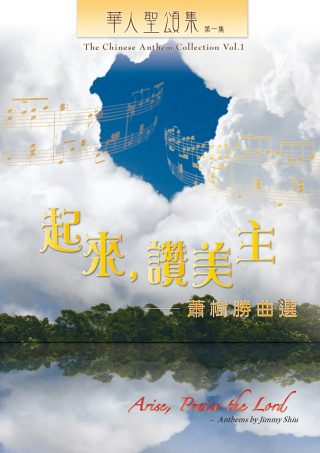
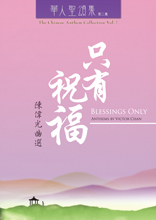

|
|
【天藍藍】 |
|
|
天藍藍，海滔滔，述說救主權能。
|
|
|
|
|
|
|

https://youtu.be/I8-fLcW-hA4
起來，讚美主：蕭樹勝曲選

華人聖頌集 1
作曲／編曲：蕭樹勝
1
加入購物車
$80.0 $76.0
內容介紹
收錄了二十一首蕭樹勝為教會創作及改編的聖頌，在選曲及寫作手法之多樣，給與我們在聖頌選材、創作及編寫上不少啟迪，激勵我們要不斷反思、更新我們的信仰表達。他也在其序言中分享其創作的一些思考，讓頌唱者能在以悟性歌唱的功課上也有所學習，好叫我們的頌唱更能引領會眾全人投入地敬拜。
本曲集獲「黃永熙博士聖樂基金」贊助。
作曲者簡介
蕭樹勝
蕭樹勝畢業於香港浸會學院音樂系，主修作曲。後赴英國雪菲爾特大學進修，並取得作曲及聲樂雙主科碩士學位；回港後，一直受聘為藝術行政人員。蕭樹勝熱愛音樂，更樂於與其他人分享音樂欣賞的樂趣，經常主講音樂講座，並在教育性音樂會中擔任主持。作為教會詩班的指揮，蕭樹勝熱衷於改編聖詩，曾經出版過自己的原創及改編作品，亦寫過幾本音樂欣賞的著作。
蕭樹勝對神學甚感興趣，即將於中國神學研究院取得基督教研究文憑。
目錄
1. 起來，讚美主 Arise, Praise the Lord｜ Jimmy Shiu
2. 崇拜始禮頌 We Worship and Adore Thee｜ Anonymous
3. 當讚美聖父 Praise Ye the Father｜ Charles Gounod
4. 祢真偉大 How Great Thou Art｜ Swedish Folk tune
5. 頌讚全能上帝 Blessed Be the Lord, God Almighty｜ Bob Fitts
6. 讓讚美飛揚 Let Praise Arise｜ 陳學明 洪啟元 游智婷
7. 人算甚麼 O What Is Man｜ 林建兒
8. 我是主的羊 His Sheep Am I｜ Orien Johnson
9. 主是我力量 The Lord Is Our Strength｜ Anonymous
10. 我的心，稱頌主 Bless the Lord, O My Soul｜ 區美賢
11. 慈愛天父 Loving Father｜ 趙保亨
12. 天藍藍 Azure Sky｜ 恩沛華
13. 愛就是 Love was when｜ Don Wyrtzen
14. 恩主使我快樂 Happiness Is the Lord｜ Ira F. Stanphill
15. 上主榮耀形象 In the Image of God｜ John W. Peterson
16. 萬古磐石 Rock of Ages｜ Thomas Hasting
17. 我主時刻顧念 Thou Thinkest, Lord, of Me｜ Edmund S. Lorenz
18. 當轉眼仰望耶穌 Turn Your Eyes upon Jesus｜ Helen H. Lemmel
19. 耶穌，沙崙玫瑰 Jesus, Rose of Sharon｜ Charles H. Gabriel
20. 每一天 Day by Day｜ Oscar Ahnfelt
21. 耶穌領我 He Leads My Way: O Blessed Thought｜ William B. Bradbury

華文詩歌發展千五年
蔣慧民縱論古今信仰傳播
（3月21日消息）
陳天惠 / 2015年3月21日
【時代論壇訊】香港中文大學崇基學院及基督教文藝出版社合辦的「華文頌歌
花香滿徑」華文詩歌發展之路講習音樂會於三月十五日及廿二日在崇基學院禮拜堂舉行。首場基督教文藝出版社音樂編輯蔣慧民主講中國由唐代至今天全球化時代的華文基督教詩歌發展，內容包括翻譯、創作和本色化的華文詩歌，不少詩歌是用方言唱的，有的歌詞用文言文寫成，也有的用白話寫成，這些詩歌在中國文化裡扎根，使基督教得以漸漸傳播開來。大會邀請了基督教香港祟真會救恩堂聖詠團和中華基督教會香港閩南堂聖歌團為會眾即場獻唱了多首詩歌。
音樂會中，蔣慧民以客家話即席演繹選自《客語聖詩》的〈月季花〉，讓會眾在了解詩歌發展之餘，能感受方言詩歌之美和歌詞配合音樂所傳遞的力量、信息。是次聚會約六十人出席。
音樂會由蔣慧民分為五個部份，講解不同時期華文詩歌的特色︰
一、華文基督教詩歌濫觴︰從〈大秦景教三威蒙度讚〉至〈康熙十架〉，歷經唐、元、明、清。
二、自西徂東的詩歌翻譯︰從馬禮遜《養心神詩》至柏漢理／富善《頌主詩歌》中的創作聖詩（愛國詩歌—我愛中華／中華歸主）。
三、本色自立、合一運動與普天頌讚︰從〈決定歌〉、〈聖誕歌〉（田景福／范天祥）到蘇佐揚的天人詩歌。
四、華人教會與中華本土的離與即︰從〈主禱文〉（黃永熙）至〈遍地細說主奇妙〉（恩沛華）、〈人生曲〉（凌東成）等。
五、全球化下的基督教詩歌︰從〈更新大地〉到〈夢想……有一天〉（鍾氏兄弟）等。
縱觀歷史，華文詩歌一直擔任著重要的傳播工作，把基督教思想由西方帶入中國，詩歌漸漸能以本土語言創作，不再單靠翻譯，大力宣揚基督教價值觀，〈夢想……有一天〉就鼓勵信徒抓緊盼望，追求和平。有關是次音樂會之更詳盡報道，可參稍後出版的《時代論壇》。
華文詩歌發展之路講習音樂會（下）將於三月廿二日晚上舉行，中華基督教會聖頌團、崇基學院禮拜堂詩班聖詠小組、香港浸會大學基督徒詩班、共鳴基督徒詩班等詩班屆時將為大家演唱十九世紀末至二十一世紀初之二的的詩歌，包括〈在伯利恆城〉（客家話聖頌）、〈救世福音傳遍中華〉和〈主乃善牧〉（林思漢）等。詳情可參：http://goo.gl/9DV4B5。